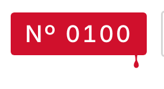

Sipply v4.6 · Pen marks v2
The logo’s paint pen, at hairline weight. Three marks, each a filled outline that swells where the pen lands and thins as it lifts, never under 0.4 pt. Campari only. Ornament, never information: no new word, count, badge or icon, and no state turned red. One mark per screen; the logo does not count.

Home · 1 mark. The drawn rule under the stories, the app’s one border. It draws itself on as the intro hands over, once per cold start.

Dex · 1 mark. The swash under “Dex”. The red 14 stays as it was, uncircled.

Drink page · 1 mark. The drip off the caught Nº plate, its one use in the app. The In-your-Dex check stays grey.

Profile · 1 mark. The swash under your username. The 14 is left plain.
1 · Swash
Tab-root titles only: Dex, Saved, your username. 56 pt × the title’s text scale (capped 1.3), 0.45 → 1.25 → 0.4 pt, lifting at the end like the y’s tail.
2 · Drawn rule
The one border: Home, under the stories, column wide. 0.4 → 1.1 → 0.4 pt, a 1 pt waver you can see, a 2 pt flick up as the pen lifts.

3 · Drip
Once in the app. Paint leaves the caught plate 6 pt in from its corner, necks, and ends in a teardrop: 8.5 pt in all.
The hand-off
The intro’s last beat: as the film clears onto Home, the rule draws left to right in 320 ms, ease-out. Once per cold start; static under Reduce Motion.
Retired in v2. The ring round the caught 14 and the red pen tick in “In your Dex”: both turned a figure or a state red, which is information.
Dex bar at @3x · before / after
Drink plates at @3x · before / after